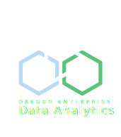
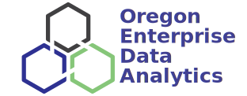

Primary (vertical) logo - Light mode
{fig-alt="Oregon Enterprise Data Analytics Logo"}OEDA logos are available as .svg files, which Quarto handles natively for HTML files. These are vector graphics files with transparent backgrounds, so they should be able to scale well and be legible in most settings.
You can right click on any of the images below and select save as to save them locally on your machine.
{fig-alt="Oregon Enterprise Data Analytics Logo"}{fig-alt="Oregon Enterprise Data Analytics Logo"}
{fig-alt="Oregon Enterprise Data Analytics Logo"}
{fig-alt="Oregon Enterprise Data Analytics Logo"}
You can scale images using either height or width. To prevent distortion, set only one or the other and let the browser work out the other dimension to keep the aspect ratio of the original. You can use absolute pixel sizes or relative percentages.
{fig-alt="Oregon Enterprise Data Analytics Logo" width=10%}{fig-alt="Oregon Enterprise Data Analytics Logo" width=30%}{fig-alt="Oregon Enterprise Data Analytics Logo" width=50%}{fig-alt="Oregon Enterprise Data Analytics Logo" width=50%}{fig-alt="Oregon Enterprise Data Analytics Logo" width=70%}{fig-alt="Oregon Enterprise Data Analytics Logo" height=100px}{fig-alt="Oregon Enterprise Data Analytics Logo" height=300px}{fig-alt="Oregon Enterprise Data Analytics Logo" height=500px}{fig-alt="Oregon Enterprise Data Analytics Logo" height=700px}